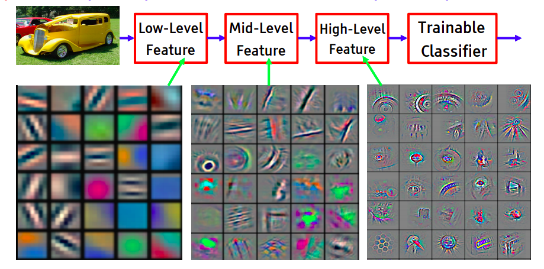
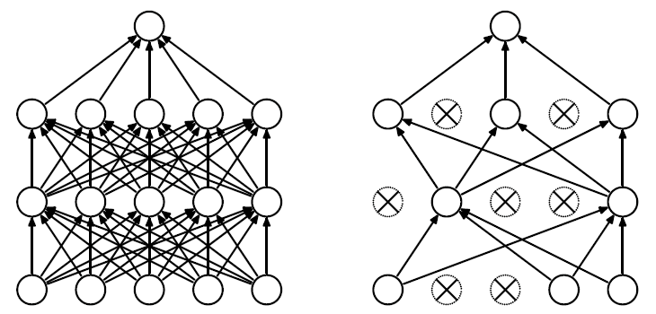
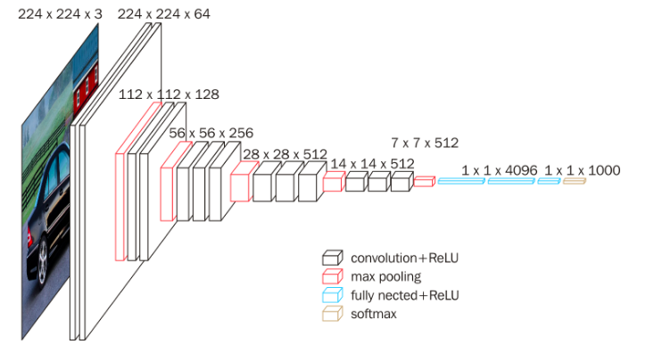

02-CNN网络识别和训练¶
CNN的识别过程¶
卷积神经网络（CNN）是一个为图形化任务定制的神经网络系统。
他会自动学习图形的卷积核(features dectors),运用max pooling和多层filter等方法，提取出图形特征，并根据特征进行预测。
https://aiatadams.files.wordpress.com/2016/02/bengio-lecun-20151207-deep-learning-tutorial-nips.pdf

Image recognition: Pixel → edge → texton → motif → part → object

CNN的训练过程¶
- 随机选取 random的weight， 初始化随机的卷积核
- 正向传播 input --> conv -->Relu --> pooling -->FC
- 计算total error， 例如mse或者cross-entropy， 假设输出是 (0.2,0.4,0.4） 真实的结果是(0,1,0)
- 反向传导，利用梯度下降去更新每个输入节点的权重，原则是强则越强，弱则越弱
- 持续重复 2~4的步骤，直到一个epochs完成
- 持续重复多个epochs，直到loss或者accuracy达到了我们需要的精度
Dropout¶
在机器学习的模型中，如果模型的参数太多，而训练样本又太少，训练出来的模型很容易产生过拟合的现象。在训练神经网络的时候经常会遇到过拟合的问题，过拟合具体表现在：模型在训练数据上损失函数较小，预测准确率较高；但是在测试数据上损失函数比较大，预测准确率较低。
过拟合是很多机器学习的通病。如果模型过拟合，那么得到的模型几乎不能用。为了解决过拟合问题，一般会采用模型集成的方法，即训练多个模型进行组合。此时，训练模型费时就成为一个很大的问题，不仅训练多个模型费时，测试多个模型也是很费时。
综上所述，训练深度神经网络的时候，总是会遇到两大缺点：
（1）容易过拟合
（2）费时

我们在前向传播的时候，让某个神经元的激活值以一定的概率p停止工作，这样可以使模型泛化性更强，因为它不会太依赖某些局部的特征。
如何设计CNN网络¶
基本模型：
- input
- conv
- relu
- pool
- fc
- output
设计要点：
- 2,3,4步骤可以重复多次。深度优于广度。
- input层，大小最好是正方形 28x28x3 64x64x3 这样的结构矩阵运算快
- input层需要是4的倍数，这样pooling下采样方便
- 卷积核的大小通常是3x3 或者5x5的，和opencv典型卷积核类似
- 步长stride一般是1，如果图像过大，可以考虑步长为2
- dropout可以考虑引入，可以很方便避免过拟合
VGG16 深度卷积神经网络， 论文地址：https://arxiv.org/abs/1409.1556

小filter，深网络。
实验任务¶
-
增加或者减少隐藏层的节点
-
增加或减少隐藏层
- 增加或减少dropout层
- 移除relu激活函数，观察准确率的变化
- 移除数据归一化 不再除以255.0
- 试着采用不同的优化算法adam ， sgd， 等
- 增大或者调小batches size